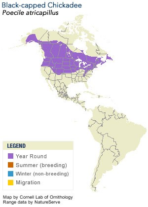

Neat facts
- Chickdees hide food to eat it later. They can remember thousands of hiding places.
- Their language-like calls are complex and communicate identity and predator information. The more 'dee' notes in a 'chickadee-dee-dee' call, the greater the threat. Other types of birds can recognize this warning call.
| Binomial Name | Poecile atricapillus |
|---|---|
| Length | 12-15 cm |
| Wingspan | 16-21 cm |
| Weight | 9-14 g |
| Habitat | Deciduous and mixed forests, open woods, parks, willow thickets and cottonwood groves |
| Food | Seeds, berries, plants, insects, spiders, bits of meat, sunflower seeds, mealworms, and peanut butter |
| Nest Location | Nest boxes, small natural cavities or abandoned Downy Woodpecker cavities |
| Nest Size | 21 cm deep |
| Egg Description | White with fine reddish-brown dots |
| Clutch Size | 1-13 eggs |

On a walk through the park, you can feed the friendly chickadees right out of your hand. Once one finds a meal, he'll go and tell his friends.